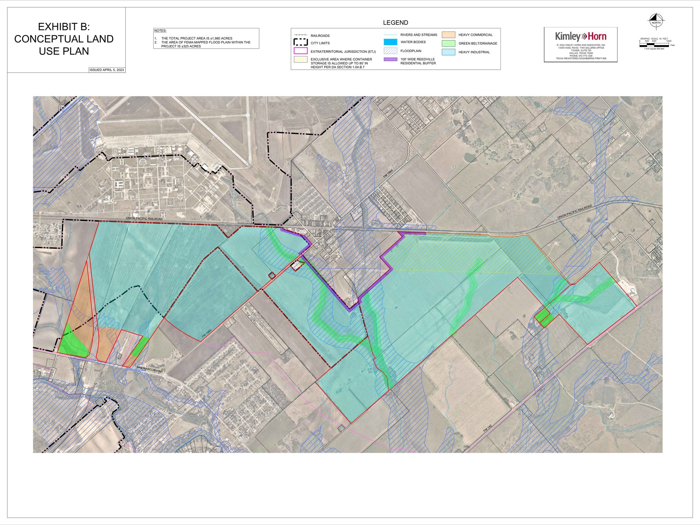

About the Project
The TriTexas Logistics Park (formerly SMART Terminal / Axis Logistics Park) is a large-scale industrial warehouse and logistics development proposed for Caldwell County, Texas along FM 1984 near San Marcos. The project is owned by El Paso billionaire Paul L. Foster through Franklin Mountain San Marcos I, LP, and is being developed by Scarborough Lane Development. Phase I infrastructure — including a 1.2-mile road, water and wastewater systems, and an on-site electrical substation — was reported complete as of May 2026. No tenants have been publicly announced.

Site & Property Context
Lender: AgTrust, ACA (formerly Lone Star, ACA) — two loans totaling approximately $52.8M secured against the ~2,017-acre site.
Governing Development Agreement: First Amended & Restated SMART Terminal DA (Caldwell Co. 2023-001629, adopted Jan 17, 2023) governs FM’s ~2,017 acres. Franklin Mountain is no longer a party to the Cotton Center Development Agreement (formally removed per §2.04 of the Second Amended & Restated Cotton Center DA, executed Jun–Aug 2024).
CAD Parcel Inventory (2026 Tax Year — Caldwell County Appraisal District)
Combined market value: ~$24.3M across 9 parcels (~2,058 ac total). All parcels carry agricultural exemptions; taxable values are a small fraction of market values.
| CAD ID | Acres | Address / Location | Market Value | Est. Tax (2026) | City of SM Tax | Owner Entity | Notes |
|---|---|---|---|---|---|---|---|
| 28002 | 762.583 | FM 1984, Maxwell | $9,761,340 | $4,316.64 | $893.08 | FM-I LP | Largest parcel; CMA-S (Martindale ETJ Release) taxing entity at $0 |
| 28280 | 660.503 | Valley Way Dr, Maxwell | $5,844,280 | $2,949.63 | — | FM-I LP | Core SMART Terminal parcel; Cotton Center MUD No. 1 at $0; straddles Lockhart ISD / San Marcos ISD |
| 27809 | 213.680 | FM 1984, Maxwell | $2,467,180 | $1,364.35 | $405.10 | FM-I LP | City of San Marcos taxing entity (confirms annexation) |
| 11678 | 143.444 | 10920 Hwy 142, Maxwell | $2,059,850 | $549.06 | — | FM-I LP | A188 Maxwell, Thomas survey; acquired from Best David Matthew Jul 2022 |
| 28052 | 75.000 | FM 1984, Maxwell | $1,202,440 | $358.60 | — | FM-75 LP | Held by separate entity (Owner ID 242650); acquired from Maxwell Acres Co. & Kasch Apr 2024 |
| 28119 | 130.296 | Quail Run Rd, Martindale | $1,580,890 | $839.75 | — | FM-I LP | Barns/sheds on site; acquired from Tack Redwood Partners Jun 2022 |
| 27881 | 70.046 | 19780 San Marcos Hwy | $1,147,610 | $469.52 | $94.34 | FM-I LP | CMA-S (Martindale ETJ Release) at $0; confirms former Martindale ETJ boundary |
| 27868 | 0.950 | 2862 FM 1984 | $114,090 | $1,621.54 | — | FM-I LP | Former homesite; $216K improvements removed by 2024; acquired from Van Lee LLC Mar 2022 |
| 129763 | 1.255 | Quail Run, Martindale | $121,790 | $6.08 | — | FM-I LP | "Old 24-ft county road strip"; acquired directly from Caldwell County Apr 2024 (WD 2024-002658) |
| Total | 2,057.757 | $24,299,470 | $12,475.17 | $1,392.52 | FM-I LP (8) + FM-75 LP (1) | All ag-exempt; taxable values well below market |
Research Reports
Political Contributions & Regulatory Influence
Tracks campaign donations from project principals to state officials, and the regulatory bodies those officials oversee that bear on the project.
Ownership Structure
Corporate chain of title tracing the entities behind the project — from land ownership through development partnerships and holding companies.
Prospective Businesses Summary
Overview of industrial recruitment efforts — the companies being pursued, projected investment figures, job claims, and current status of each prospect.
Project Timeline
Chronological record of major project milestones, government approvals, public announcements, and key decisions from inception to present.
Document Timeline
Searchable index of public records and official documents ordered by date — city council items, PIR responses, agency filings, and more.
Groundwater Contamination Research
Historical contamination at Gary Air Force Base / Gary Job Corps Center and questions raised about its potential relevance to ground disturbance at the SMART Terminal site.